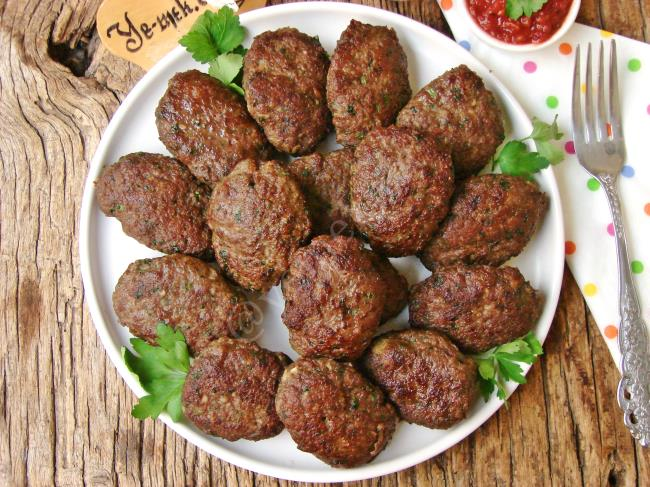
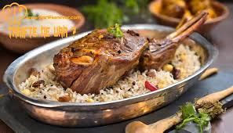
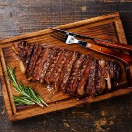
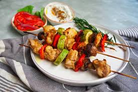
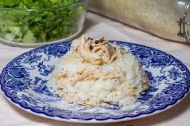
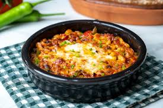
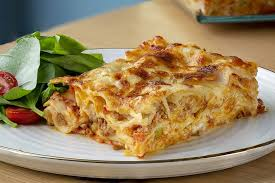
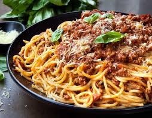

Ana Yemekler
Bir öğünde genellikle en doyurucu ve besleyici olan yemek türüdür. Öğünün merkezidir. Diğer yemeklerin aksine daha büyük porsiyonlarda sunulur ve lezzetlidirler.
Ana yemeklerin temel özellikleri arasında doyurucu olması, çeşitli pişirme yöntemlerinin kullanılması ve ana malzemenin genellikle et olması vardır. Çeşitli pişirme yöntemlerine örnek verecek olursak fırınlama, kızartma, haşlama, ızgara, buharda pişirme...
Farklı kültürlerde ve mutfaklarda çeşitlenmiş olsa da ana yemekler genellikle et, sebze veya deniz ürünleri ağırlıklıdır. Bazı ana yemek çeşitleri:
-

- Köfte: Kıyma, baharatlar ve çeşitli malzemeler ile yapılan köfteler; Türk mutfağının en bilinen ana yemeklerindendir. Genellikle pilav veya patates kızartması ile servis edilir. 
- Kuzu Tandır: Kuzu eti ve baharatlarla harmanlanan ve uzun süre pişirilen bir ana yemektir. 
- Biftek: Izgara veya tavada pişirilen bir et yemeğidir.
-

- Tavuk Şiş: Tavuk etinin şişe geçirilip ızgarada pişirilmesiyle yapılan bir ana yemektir. 
- Tavuklu Pilav: Pilavın üzerine tavuk eti eklenerek yapılan bir ana yemektir.
- Izgara Balık: Levrek, çipura veya somon gibi balıkların pişirilip yanında zeytinyağ ile pişirilmiş sebzelerle servis edilen bir ana yemektir. 
- Karides Güveç: Karideslerin sebzelerle pişirilmesiyle yapılan sıcak bir ana yemektir.

-

- Lazanya: Kıyma, beşamel sos ve peynirle yapılan İtalyan mutfağının meşhur ana yemeğidir. 
- Spagetti Bolonez: Kıymalı domates sosu ile servis edilen bir ana yemektir.